設計は docs/home-roadmap-design.md の8章。今と2つの案を、スマホ縦（390×844）とPC（1366×768）で並べた。案Aは、ほかの大きさ（375×553・820×1180・844×390）も載せた。数字は見本。
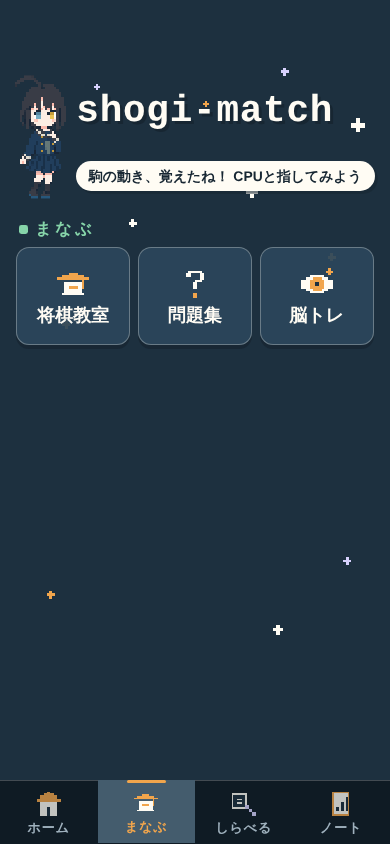
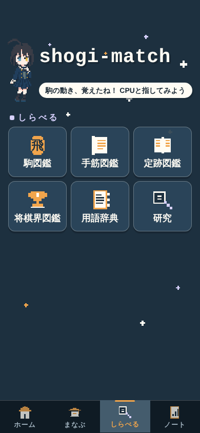
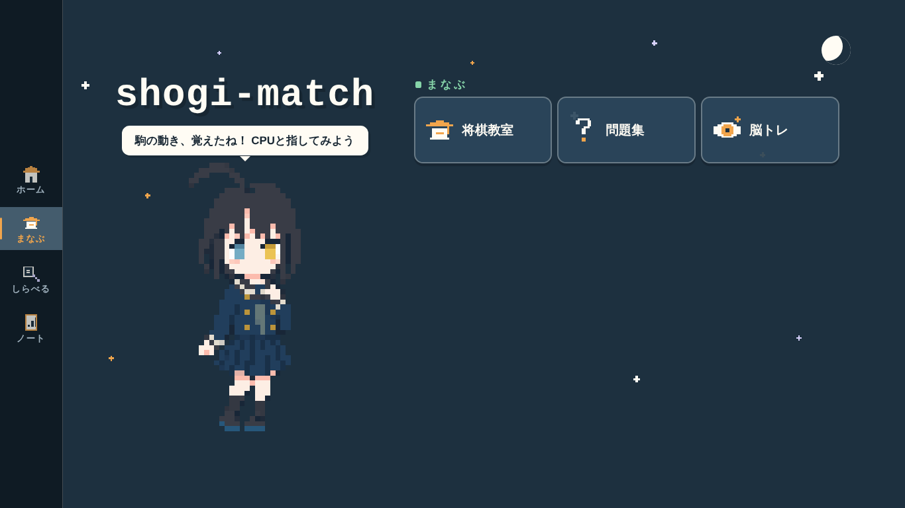
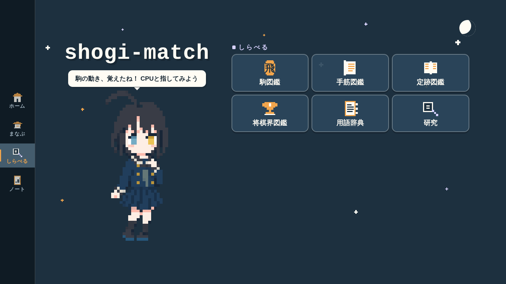
タブの面いっぱいに、札を大きくする。札には名前の下に「いまどこまでか」を1〜2行（教室はつぎのレッスンと進み具合、問題集は今日の5問と解いた数、脳トレは今日の部屋と今週の判子、図鑑は集めた数）。押すと今と同じ画面が開く（手数は同じ）。
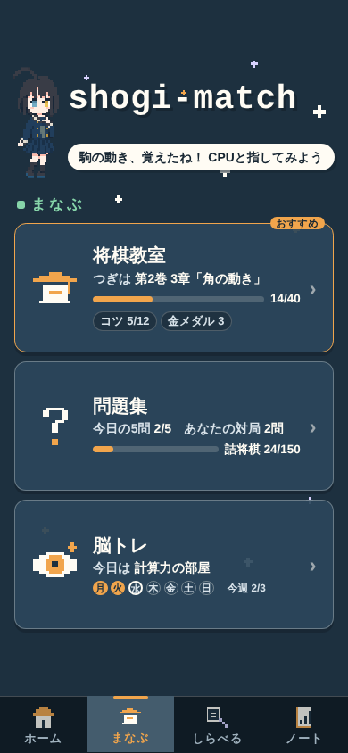
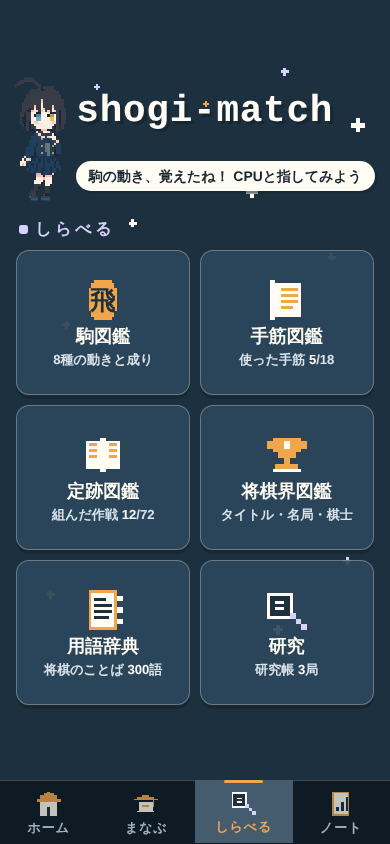
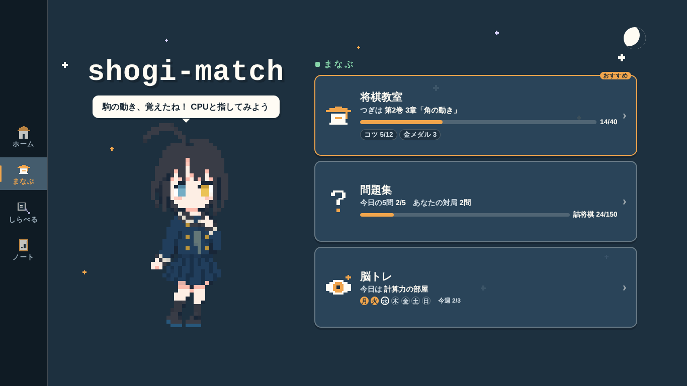
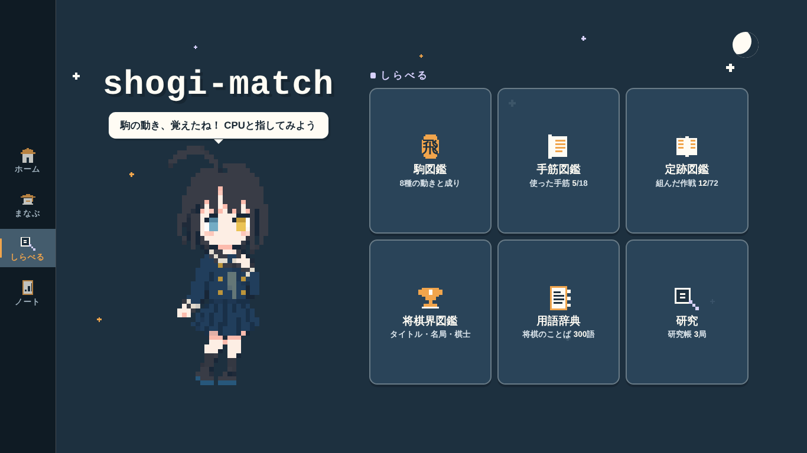
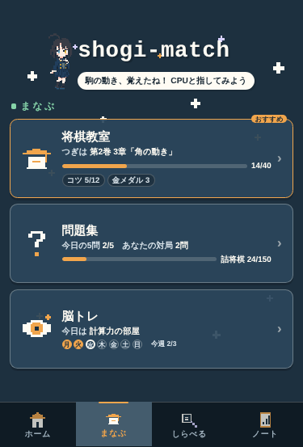
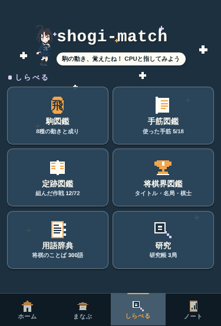
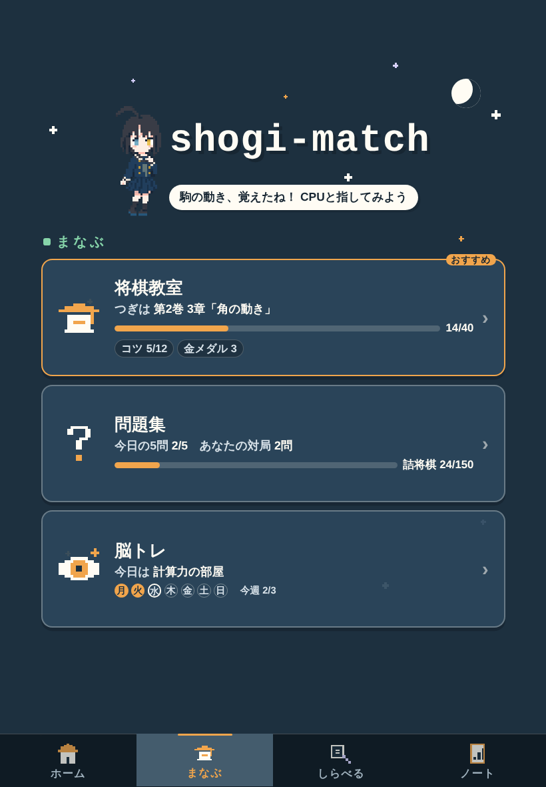
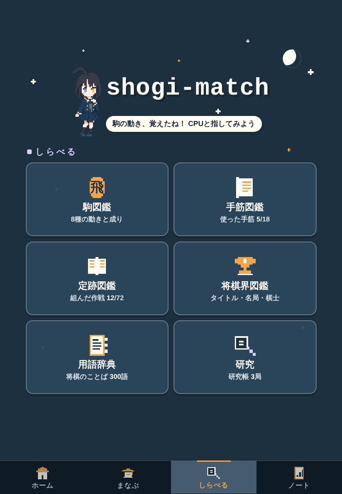
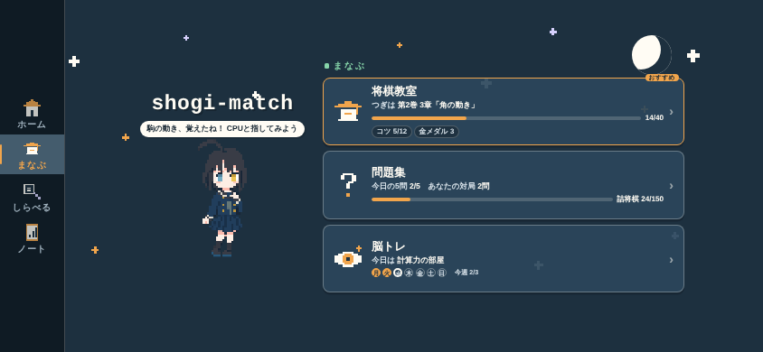
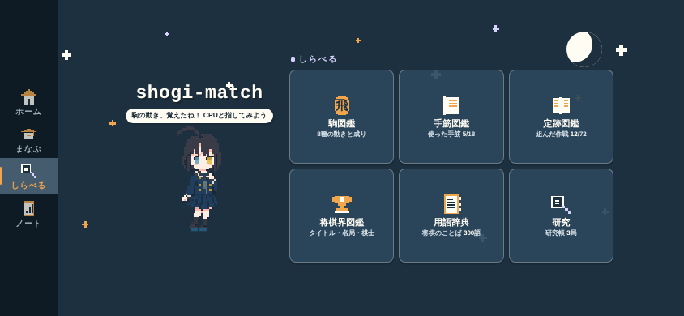
まなぶは、やこび姫の「次はこれ」の大きな札と「続きから」のボタン、その下に今の3枚。しらべるは「さいきん見たもの」の札と6枚。
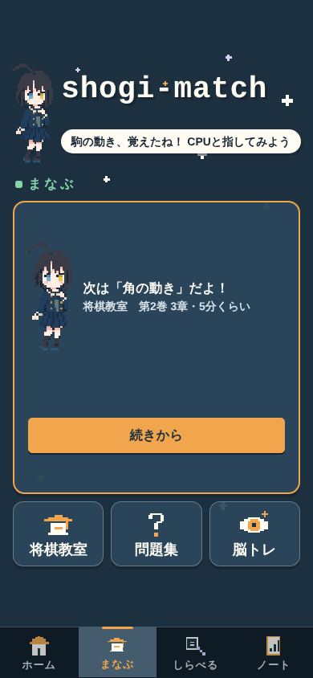
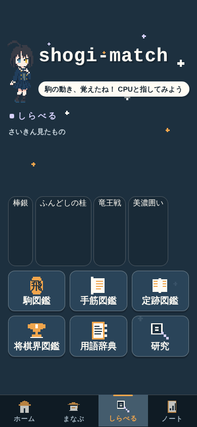
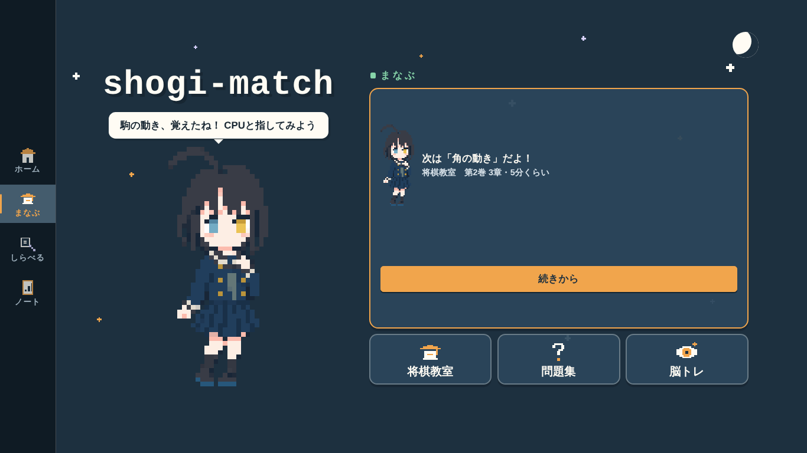
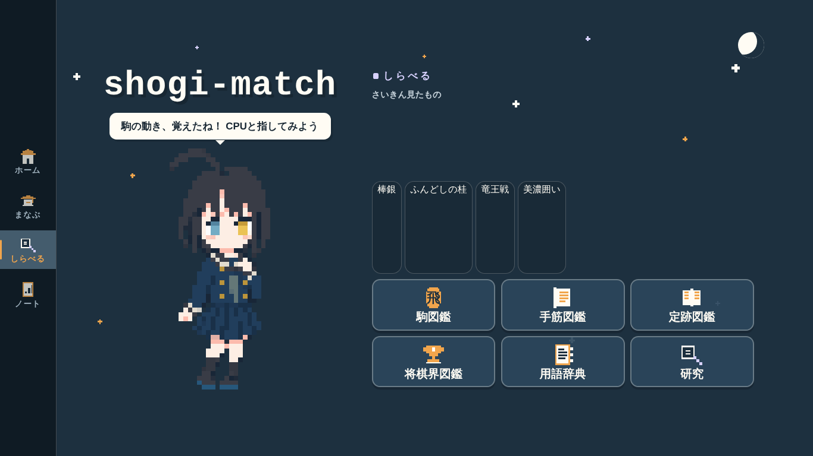